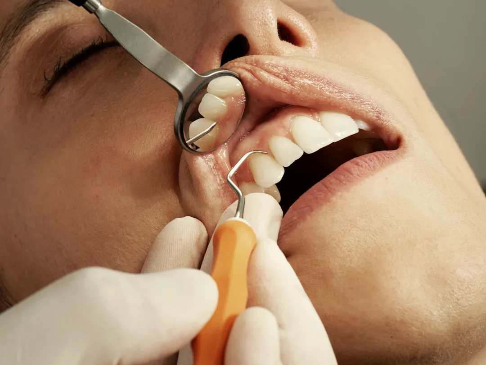

01 · PREVENTIVE & ROUTINE CARE
The Everyday Essentials
Routine checkups and gentle ultrasonic cleanings keep small enamel changes from turning into complex procedures. We use warm water irrigation and fine piezoelectric tips to lift tartar and tea or coffee staining without harsh scraping on sensitive gums.
- Comprehensive oral examination & gum health charting
- Ultrasonic scaling, stain polishing & fluoride conditioning
- Tooth-shaded biomimetic composite fillings & sensitivity relief